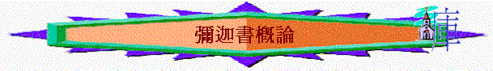

背景
緒論
「當猶大王約坦、亞哈斯、希西家在位的時候，摩利沙人彌迦得耶和華的默示，論撒瑪利亞和耶路撒冷。」1:1
一.作者：彌迦
〜意思「誰能像耶和華」他是南國摩利沙人
二.對象
〜南國與北國的人，但主要對象應是南邊猶大
三.背景與問題
1.北國：快要滅亡
2.南國：仍算安穩(亞哈、約坦、亞哈斯、希西家作王)
仍有宗教生活
3.整體
A.時勢甚惡(充滿不義)
「所以耶和華如此說：我籌劃災禍降與這族；這禍在你們的頸項上不能解脫；你們也不能昂首而行，因為這時勢是惡的。」2:3
B.錯誤觀念
(1)神會有忍耐
「雅各家啊，豈可說耶和華的心不忍耐嗎（或作：心腸狹窄嗎）？這些事是他所行的嗎？我耶和華的言語豈不是與行動正直的人有益嗎？」2:7
(2)神不會降災
「所以因你們的緣故，錫安必被耕種像一塊田，耶路撒冷必變為亂堆；這殿的山必像叢林的高處。」3:12
4.仇敵
A.恥笑選民
「那時我的仇敵，就是曾對我說「耶和華你神在那裡」的，他一看見這事就被羞愧遮蓋。我必親眼見他遭報；他必被踐踏，如同街上的泥土。」7:10
B.攻擊選民
「現在有許多國的民聚集攻擊你，說：願錫安被玷污！願我們親眼見他遭報！」4:11
四.中心思想----人的不義與神的公義
1.見証他們的不義
「萬民哪，你們都要聽！地和其上所有的，也都要側耳而聽！主耶和華從他的聖殿要見證你們的不是。」1:2
2.顯出真神的公義
「我的百姓啊，你們當追念摩押王巴勒所設的謀和比珥的兒子巴蘭回答他的話，並你們從什亭到吉甲所遇見的事，好使你們知道耶和華公義的作為。」6:5
〜神不是單有忍耐、慈愛一面、祂也有公義，當看見選民犯罪後，神會有公義的作為，當然人若回轉神仍會作出公義的赦免。
五.大綱
1.萬民的不義與神的公義(1:1-7:6)
2.先知的持守與神的恩典(7:7-20)
六.本書的果效
「耶利米說完了耶和華所吩咐他對眾人說的一切話，祭司、先知與眾民都來抓住他，說：「你必要死！」耶26:8
「首領和眾民就對祭司、先知說：「這人是不該死的，因為他是奉耶和華我們神的名向我們說話。」國中的長老就有幾個人起來，對聚會的眾民說：「當猶大王希西家的日子，有摩利沙人彌迦對猶大眾人預言說：萬軍之耶和華如此說：錫安必被耕種像一塊田；耶路撒冷必變為亂堆；這殿的山必像叢林的高處。猶大王希西家和猶大眾人豈是把他治死呢？希西家豈不是敬畏耶和華、懇求他的恩嗎？耶和華就後悔，不把自己所說的災禍降與他們。若治死這人，我們就作了大惡，自害己命。」耶26:16-19
「然而，沙番的兒子亞希甘保護耶利米，不交在百姓的手中治死他。」耶26:24
1.令希西家敬畏神
2.改變神降災意念
3.使耶利米得拯救